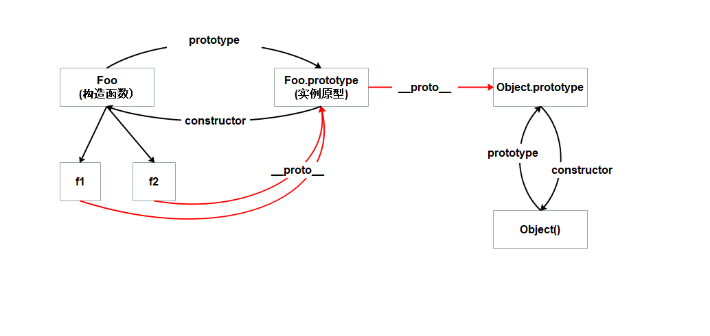

深入理解原型
本文主要介绍:
- 什么是原型和原型链
- prototype和__proto__有什么区别
- new和Object.create()创建对象和实现继承的区别
- instanceof 运算符用于检测构造函数的 prototype 属性是否出现在某个实例对象的原型链上。
整体关系图：

原型
- 通常原型指的是对象的原型即obj.__proto__或者ES6中Object.getPrototypeOf(obj)。
- fn.prototype是原型对象，对象的原型即函数的原型对象
- __proto__ 指向构造函数的原型对象,Object、Function都是构造函数
- 同时fn.prototype原型对象也是个对象，所以它的原型fn.prototype.__proto__是Object.prototype
- 所有对象的原型最终都会指向Object.prototype，除了Object.prototype本身，因为Object.prototype.__proto__ === null
- Js中,每个函数都有一个prototype属性,它指向prototype对象即原型对象;
1
2
| function Foo () {}
Foo.prototype
|
- 每个对象(除了null)都有一个__proto__属性,它指向该对象的原型对象.(所有对象都可以通过__proto__找到Object对象)
1
2
3
4
5
| let foo = new Foo()
foo.__proto__ === Foo.prototype
const obj = {}
obj.__proto__ === Object.prototype
|
- 函数的__proto__指向Function.prototype(所有函数都可以通过__proto__找到Function对象)
1
| Foo.__proto__ === Function.prototype
|
- 原型对象的proto(如Foo.prototype.__proto__)指向Object.prototype
1
2
| Foo.prototype.__proto__ === Object.prototype
Function.prototype.__proto__ === Object.prototype
|
- 原型对象都可以通过constructor属性找到构造函数(顶层是Function或Object)
1
2
3
| Object.prototype.constructor === Object
obj.__proto__.constructor === Object
Function.prototype.constructor === Function
|
- Object.prototype.__proto__指向null

强化记忆点
1
2
3
| Object._proto_ === Function.prototype
Function.__proto__ === Function.prototype
Object.prototype.__proto__ === null
|
原型链
对象之间通过__proto__连接起来，就是原型链。当前对象不存在的属性，通过原型链层层往上找，直到最上层Object对象

prototype VS __proto__
- prototype是函数独有的
- __proto__实际相当于Object.getPrototypeOf(obj),获取对象的原型
new VS Object.create()
js中,通过prototype实现继承,new和Object.create()是创建对象,实现继承的方式.
Object.create()可以用第一个参数指定新对象的原型,第二个参数是新对象的属性(需要配置是否可枚举,可改写,可配置)
- 用new创建对象
1
2
3
4
5
6
7
8
9
10
11
12
13
14
15
16
17
18
19
20
| function Foo() {
console.log("hi");
}
Foo.prototype.name = "mei";
f1 = new Foo();
f2 = new Foo();
console.log(f1.__proto__);
console.log(f2.__proto__);
console.log(f1.__proto__ === f2.__proto__);
console.log(f1.__proto__ === Foo.prototype);
console.log(Foo.prototype.__proto__);
console.log(Foo.prototype.__proto__.__proto__);
console.log(f1==f2);
|
- 用Object.create()创建;为新对象设置原型
1
2
3
4
5
6
7
8
9
10
11
12
13
14
15
16
17
18
19
| let obj = {
name: "mei"
}
obj1 = Object.create(obj);
obj2 = Object.create(obj);
log(obj1, obj2)
log(obj1.name, obj2.name)
console.log(obj.__proto__);
console.log(obj1.__proto__);
console.log(obj2.__proto__);
console.log(obj1.__proto__ === obj2.__proto__);
console.log(obj.__proto__ === obj1.__proto__);
console.log(obj.__proto__.__proto__);
console.log(obj1==obj2);
|
1
2
3
4
5
| foo = new Foo()
相当于
foo2 = Object.create(Foo.prototype)
foo.__proto__ === foo2.__protp__
|
详解Object.create(proto[, propertiesObject])
- proto
新创建对象的原型。
- propertiesObject
可选。需要传入一个对象,如果该参数被指定且不为 undefined，该传入对象的自有可枚举属性(即其自身定义的属性，而不是其原型链上的枚举属性)将为新创建的对象添加指定的属性值和对应的属性描述符。1
2
3
4
5
6
7
8
9
10
11
12
13
14
15
16
17
18
| let o = Object.create(null)
let o2 = {}
相当于
let o2 = Object.create(Object.prototype)
o = Object.create({}, { p: { value: 42 } })
o2 = Object.create({}, {
p: {
value: 42,
writable: true,
enumerable: true,
configurable: true
}
});
|
instanceof
用于检测构造函数的 prototype 属性是否出现在某个实例对象的原型链上。
人话就是：判断Fn.prototype是否等于fn.__proto__
1
2
3
4
5
6
7
8
9
10
11
12
13
14
|
object instanceof constructor
function Fn() {}
let fn = new Fn()
fn instanceof Fn
fn.__proto__ === Fn.prototype
Fn.prototype = {}
fn instanceof Fn
Fn.prototype.a = ''
fn instanceof Fn
|
- 通常用来判断某实例是否源自某构造函数
1
2
| [] instanceof Array
fn instanceof Object
|